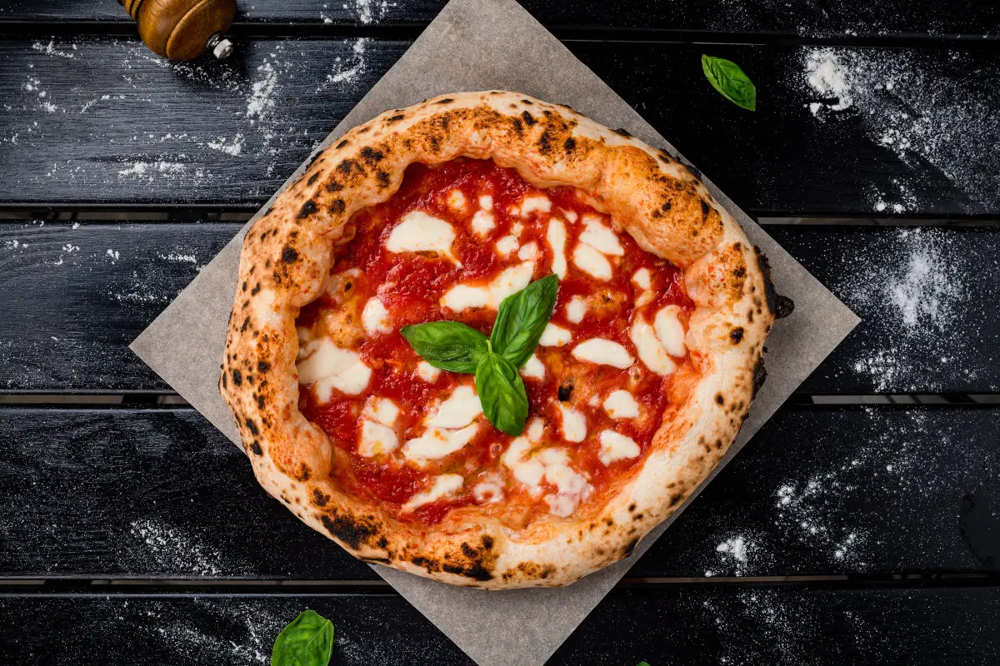
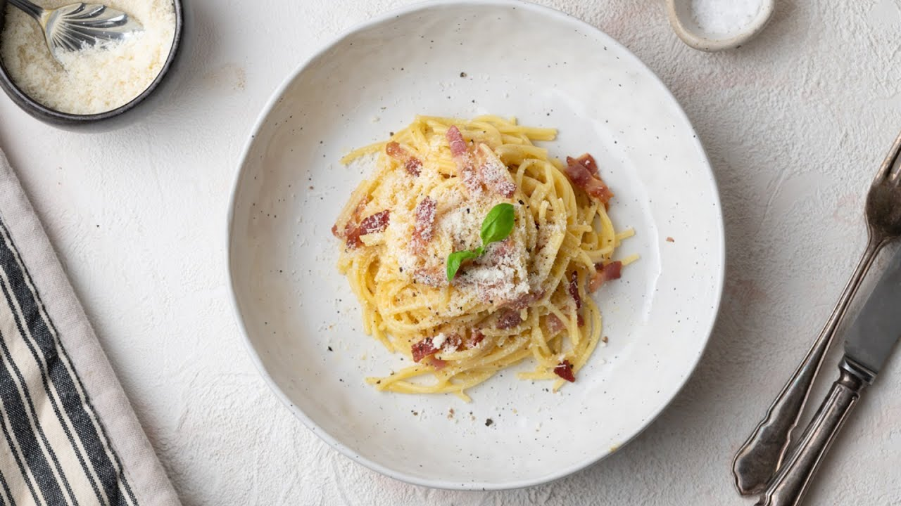
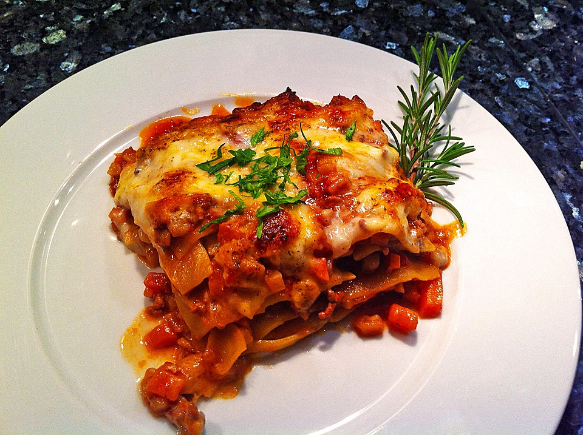
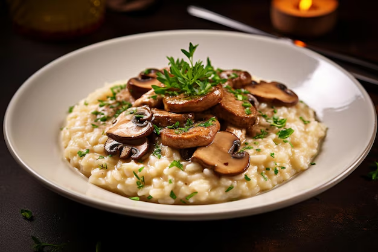
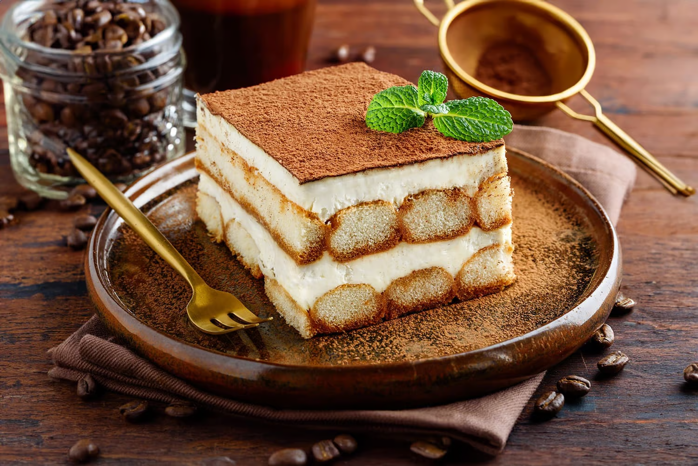
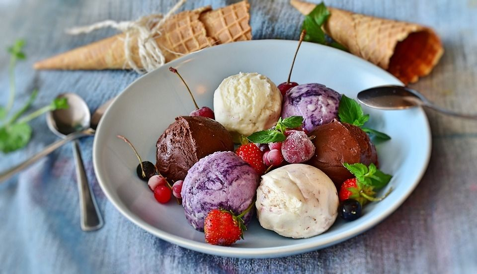

Daftar Kuliner Khas Italia
Hidangan ikonik yang wajib Anda cicipi dalam perjalanan rasa Anda.

Pizza Napoletana
Ikon kuliner Italia, dengan adonan tipis, saus tomat San Marzano, mozzarella, dan basil segar.

Pasta Carbonara
Spaghetti dengan saus creamy dari telur, keju Pecorino Romano, guanciale, dan lada hitam.

Lasagna al Forno
Lapisan pasta, saus béchamel, saus ragù (daging cincang), dan keju yang dipanggang sempurna.

Risotto ai Funghi
Nasi arborio yang dimasak perlahan dengan kaldu, jamur, dan keju parmesan hingga creamy.

Tiramisu
Dessert klasik dengan lapisan ladyfingers yang dicelup kopi, krim mascarpone, dan taburan kakao.

Gelato
Es krim Italia yang lebih padat dan kaya rasa, dengan berbagai varian buah dan kacang-kacangan.